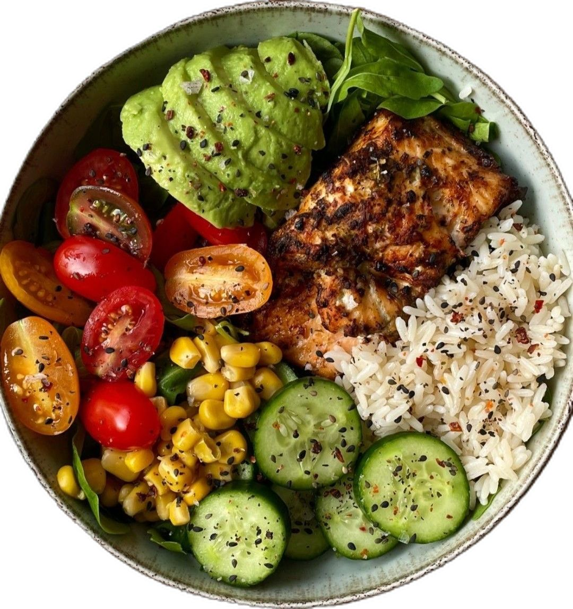
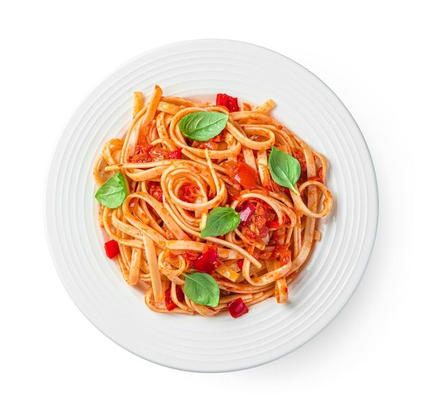
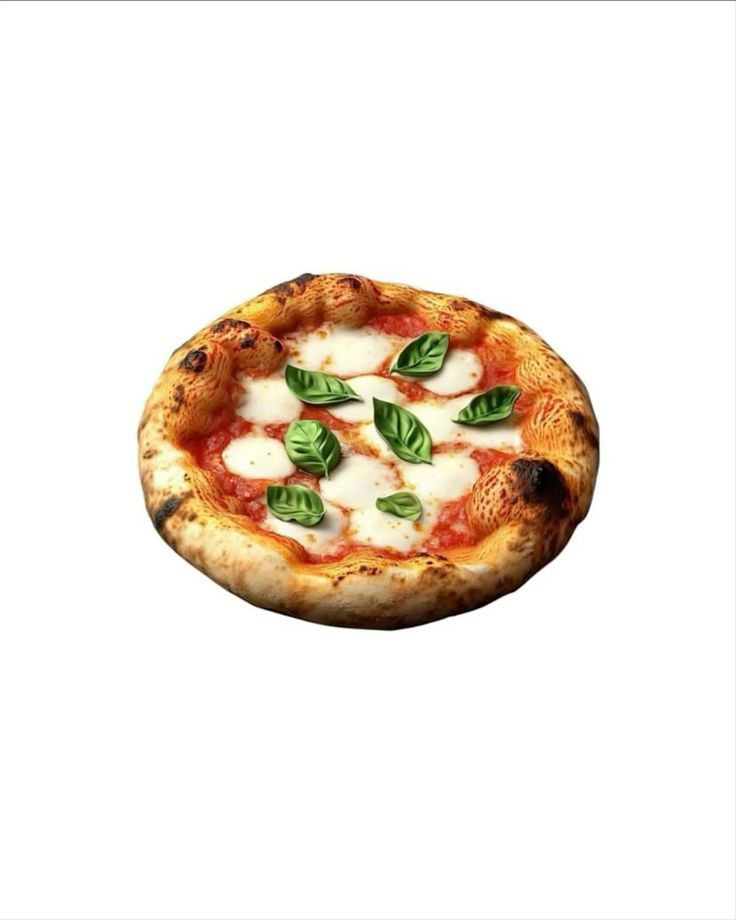
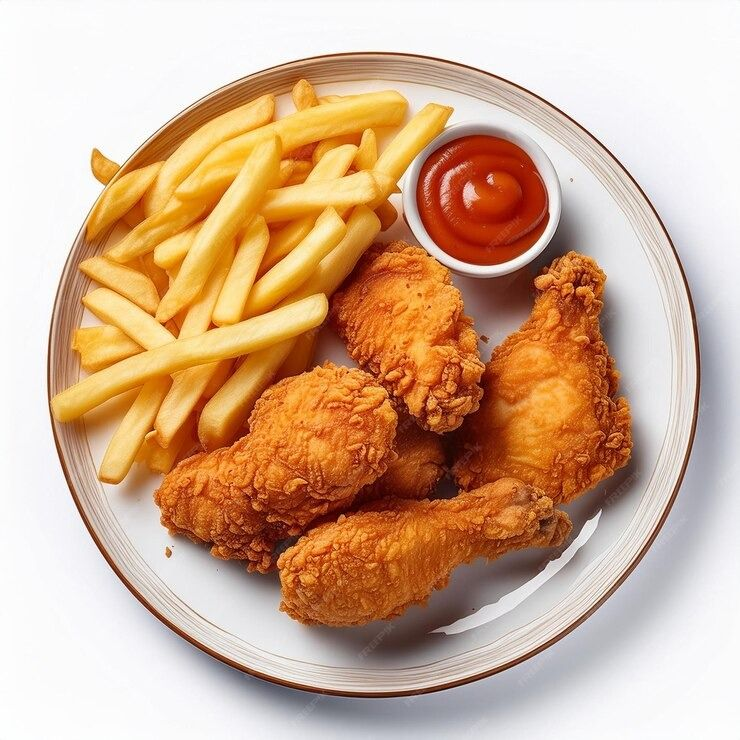
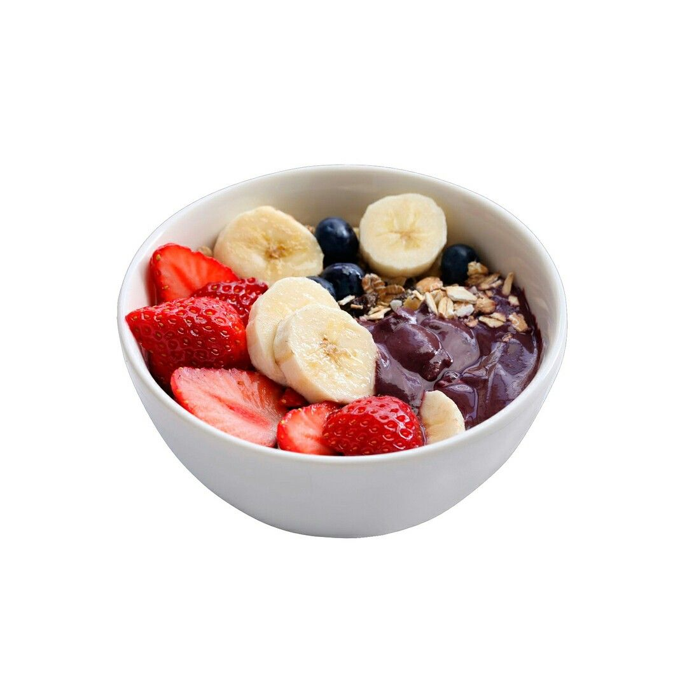
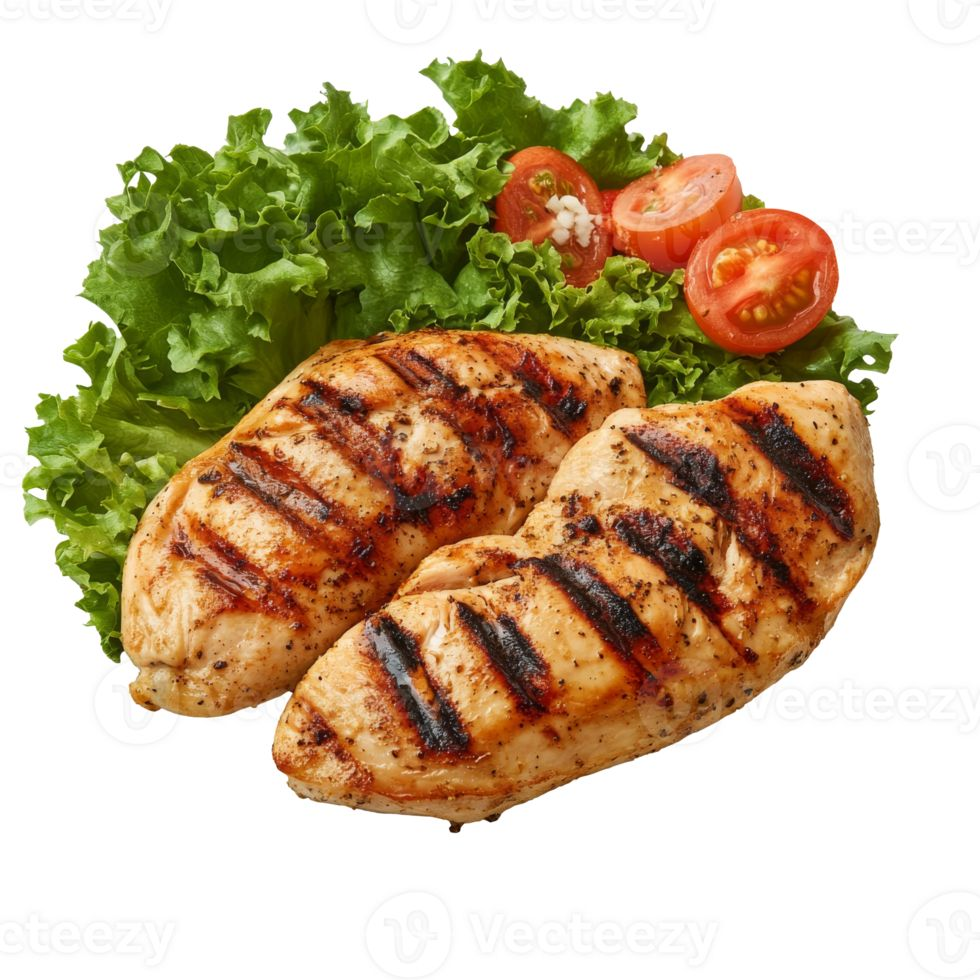

CookySelf
Graciano Neto
Nivel: Pequeno Chefe
255
Minhas Receitas
Favoritos
Cursos
Comunidade
Versão Gratuita
Atualize para a versão premium para desbloquear todos os recursos!
Ir para versão premium

Faça o seu prato
Receitas novas para ti hoje!
167
Tutoriais
392
Recceitas

Massa Italiana
Intermediario
25
min
95
cal
4
ingredients
Comece a cozinhar

Mini Pizza
Intermediario
45
min
95
cal
7
ingredients
Comece a cozinhar

Frango Frito
Iniciante
30
min
95
cal
3
ingredients
Comece a cozinhar

Salada de frutas
Iniciante
8
min
95
cal
4
ingredients
Comece a cozinhar

Carne Grelhada
Intermediario
25
min
95
cal
5
ingredients
Comece a cozinhar